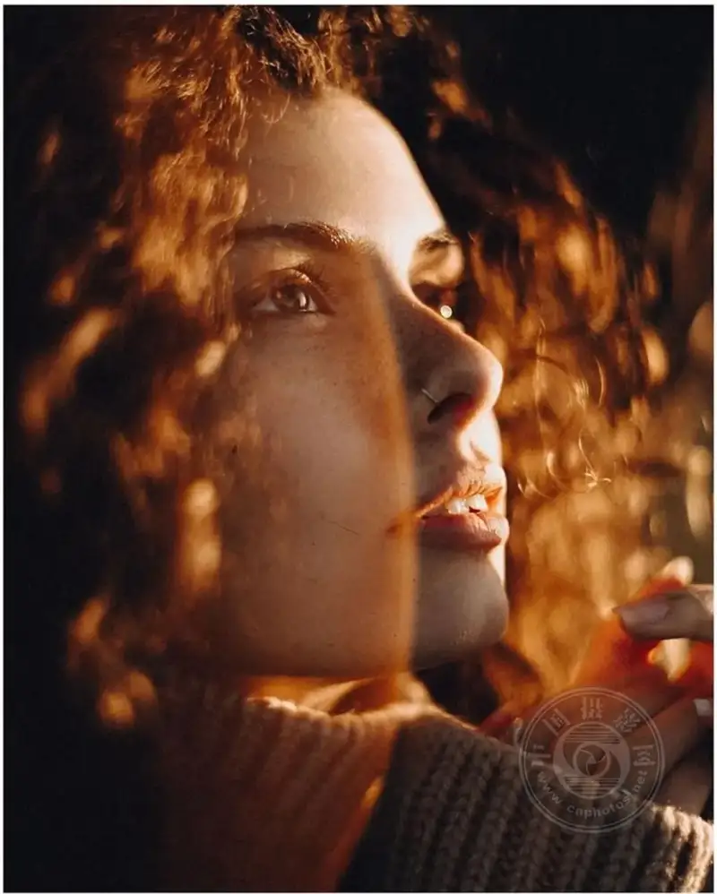
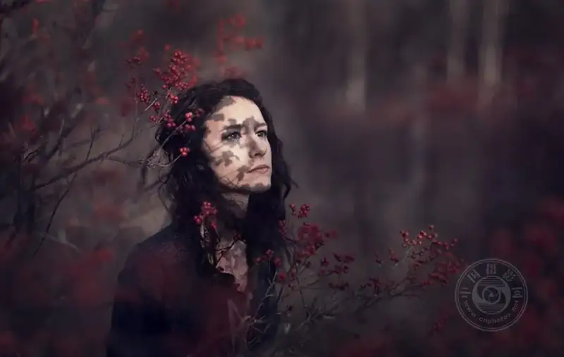
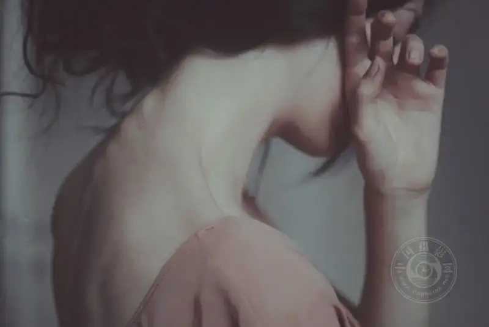
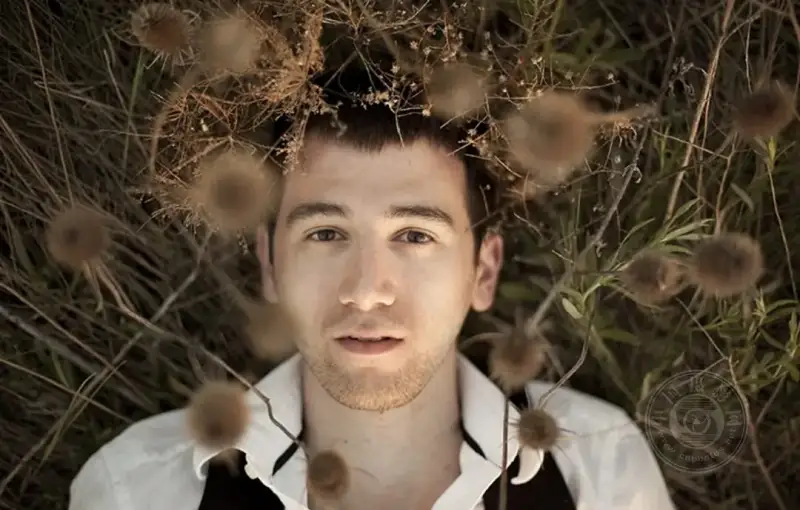
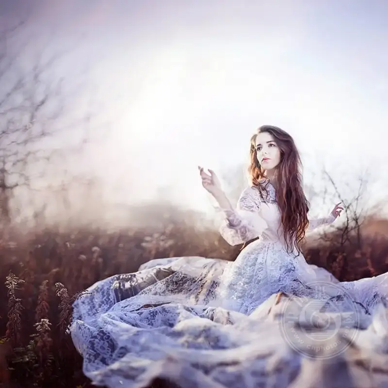

Portrait photography is a fascinating art, and its core is to capture the spirit and personality of a person. Whether you shoot friends, family, or pro models, these ten tips help you take outstanding portraits.
01. Know your subject
Before you press the shutter, spend some time getting to know the person. Talk with them to help them relax, and find the expressions and poses that suit them best. Understanding their personality helps you capture real emotion.

▲ © olesyashatskova
02. Choose the right lens
For portraits, a prime lens between 50mm and 85mm is ideal. It gives a flattering perspective, keeps your attention on the subject, and blurs the background into soft bokeh.
▲ © Berta Vicente
03. Focus on the eyes
The eyes are the most expressive part of a portrait. Make sure both eyes are sharp and in precise focus, because they hold the viewer's gaze. Use a wide aperture for shallow depth of field to make the eyes stand out.
▲ © ggphotographyofficial
04. Use natural light well
Natural light is often the best choice for portraits, and it gives a soft, pleasing glow. Shoot in the golden hour, the short time after sunrise or before sunset, for warm, diffused light. If you shoot indoors, place the subject near a window.

▲ © Rob Woodcox
05. Try different angles and viewpoints
Do not fear trying many angles and viewpoints. Shooting from slightly above the subject often flatters. A low angle looking up adds drama. Varying your approach helps you make portraits that are unique and full of tension.
▲ © Greg Ponthus
06. Watch the background
A background can make or break a portrait. Pick a clean, uncluttered background so the eye stays on the subject. Or use elements of the environment to add context and tell a story, but do not let them pull attention from the subject.
▲ © charleenweiss & josselin
07. Play with composition
Use techniques such as the rule of thirds, leading lines, and frame composition to make portraits that draw the eye. Place the subject off center, or use elements of the environment to frame them. Both add depth and interest to the frame.

▲ © Teresa Queirós
08. Guide and communicate
Good communication is the key to bringing out the best in your subject. Give clear direction and positive feedback to help them relax and pose naturally. Encourage spontaneous expressions and moves, and catch real, natural moments.

▲ © Rob Woodcox
09. Post-processing and retouching
Post-processing can improve a portrait, but use it with care. Adjust exposure, contrast, and color balance for a refined look. Softly retouch skin blemishes, keep a natural texture, and avoid over-processing.

▲ © Rob Woodcox
10. Practice and experiment
The best way to improve your portrait work is to keep practicing. Try different light, camera settings, and subjects. Learn from every shoot, and do not fear mistakes. They are part of growing.
▲ © Teresa Queirós
Portrait photography is a rewarding and expressive field. It lets you capture the unique inner spirit of your subject. Know your subject, use the right gear, and keep sharpening your skill, and you will make beautiful, moving portraits.
Remember, steady practice and bold experimentation are the keys to a personal style and a portrait voice of your own.
Which tip is your favorite? Or what problem do you run into when you shoot portraits? Share it in the comments.